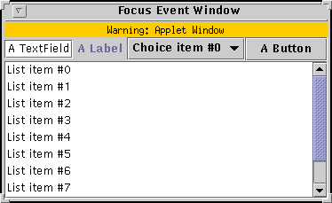

Feedback Form
|
|
Start of Tutorial > Start of Trail > Start of Lesson |
Search
Feedback Form |
Focus events are fired whenever a component gains or loses the keyboard focus. This is true whether the change in focus occurs through the mouse, the keyboard, or programmatically. If you're unfamiliar with basic focus concepts or want detailed information about focus, see How to Use the Focus Subsystem.
This section explains how to get focus events for a particular component by registering a
FocusListeneron it. If you're only interested in focus events for windows, you might want to implement aWindowFocusListenerinstead. If you need to know the focus status of many components, consider implementing aPropertyChangeListeneron theKeyboardFocusManager, as described in Tracking Focus Changes to Multiple Components
Version note: The focus subsystem was completely rearchitected in release 1.4. This section uses concepts and methods introduced in that release.The following example demonstrates focus events. The window displays a variety of components. A focus listener, registered on each component, reports every focus-gained and focus-lost event. For each event, the other component involved in the focus change, the opposite component, is reported. For example, when the focus goes from a button to a text field, a focus-lost event is fired by the button (with the text field as the opposite component) and then a focus-gained event is fired by the text field (with the button as the opposite component). Focus-lost events can be temporary, which occurs when the window loses the focus, for example.
 [PENDING: new screenshot forthcoming with several samples of output]
Try this:
- Run FocusEventDemo using JavaTM Web Start. Or, to compile and run the example yourself, consult the example index.
- You'll see a "Focus gained: JTextField" message in the text area — its "opposite component" is null, since it is the first component to have the focus.
- Click the label. Nothing happens because the label, by default, can't get the focus.
- Click the combo box. A focus-lost event is fired by the text field and a focus-gained event by the combo box. The combo box now shows that it has the focus, perhaps with a dotted line around the text — exactly how this is represented is look and feel dependent.
Notice that when the focus changes from one component to another, the first component fires a focus-lost event before the second component fires a focus-gained event.- Select a choice from the combo box's menu. Click the combo box again. Notice that no focus event is reported. As long as the user manipulates the same component, the focus stays on that component.
- Click the text area where the focus events are printed. Nothing happens because the text area has been rendered un-clickable with
setRequestFocusEnabled(false).- Click the text field to return the focus to the initial component.
- Press Tab on the keyboard. The focus moves to the combo box and skips over the label.
- Press Tab again. The focus moves to the button.
- Click another window so that the FocusEventDemo window loses the focus. A temporary focus-lost event is generated for the button.
- Click the top of the FocusEventDemo window. A focus-gained event is fired by the button.
- Press Tab on the keyboard. The focus moves to the list.
- Press Tab again. The focus moves to the text area.
Notice that even though you can't click on the text area, you can tab to it. This is so users who use assistive technologiessetRequestFocusEnabled(false)on the text area. The demo could usesetFocusable(false)to truly remove the text area from the focus cycle, but that would have the unfortunate effect of making the component unavailable to those who use assistive technologies.- Press Tab again. The focus moves from the list back to the text field. You have just completed a focus cycle. See the introduction
You can find the demo's code in
FocusEventDemo.java. Here is the code that's related to focus-event handling:
public class FocusEventDemo ... implements FocusListener ... { public FocusEventDemo() { ... JTextField textField = new JTextField("A TextField"); textField.addFocusListener(this); ... JLabel label = new JLabel("A Label"); label.addFocusListener(this); ... JComboBox comboBox = new JComboBox(vector); comboBox.addFocusListener(this); ... JButton button = new JButton("A Button"); button.addFocusListener(this); ... JList list = new JList(listVector); list.setSelectedIndex(1); //It's easier to see the focus change //if an item is selected. list.addFocusListener(this); JScrollPane listScrollPane = new JScrollPane(list); //We want to prevent the list's scroll bars //from getting the focus - even with the keyboard. //Note that in general we prefer setRequestFocusable //over setFocusable for reasons of accessibility, //but this is to work around bug #4866958. listScrollPane.getVerticalScrollBar().setFocusable(false); listScrollPane.getHorizontalScrollBar().setFocusable(false); ... //Set up the area that reports focus-gained and focus-lost events. display = new JTextArea(); display.setEditable(false); //The method setRequestFocusEnabled prevents a //component from being clickable, but it can still //get the focus through the keyboard - this ensures //user accessibility. display.setRequestFocusEnabled(false); display.addFocusListener(this); JScrollPane displayScrollPane = new JScrollPane(display); //Work around for bug #4866958. displayScrollPane.getHorizontalScrollBar().setFocusable(false); displayScrollPane.getVerticalScrollBar().setFocusable(false); ... } ... public void focusGained(FocusEvent e) { displayMessage("Focus gained", e); } public void focusLost(FocusEvent e) { displayMessage("Focus lost", e); } void displayMessage(String prefix, FocusEvent e) { display.append(prefix + (e.isTemporary() ? " (temporary):" : ":") + e.getComponent().getClass().getName() + "; Opposite component: " + (e.getOppositeComponent != null ? e.getOppositeComponent().getClass().getName() : "null") + newline); } ... }
The corresponding adapter class is
FocusAdapter.
Method Purpose focusGained(FocusEvent)Called just after the listened-to component gets the focus. focusLost(FocusEvent)Called just after the listened-to component loses the focus.
Method Purpose boolean isTemporary()Returns true if a focus-lost event is temporary. This occurs, for example, when the component's window loses the focus. Component getComponent()
(injava.awt.event.ComponentEvent)Returns the component that fired the focus event. Component getOppositeComponent()Returns the other component involved in the focus change. For a FOCUS_GAINEDevent, this is the component that lost the focus. For aFOCUS_LOSTevent, this is the component that gained the focus. If the focus change involves a native application, a Java application in a different VM or context, or no other component, thennullis returned. This method was introduced in release 1.4.
The following table lists the examples that use focus listeners.
Example Where Described Notes FocusEventDemoThis section Reports all focus events that occur on several components to demonstrate the circumstances under which focus events are fired. TrackFocusDemoHow to Use the Focus Subsystem The custom component, Picture
|
|
Start of Tutorial > Start of Trail > Start of Lesson |
Search
Feedback Form |
Copyright 1995-2004 Sun Microsystems, Inc. All rights reserved.